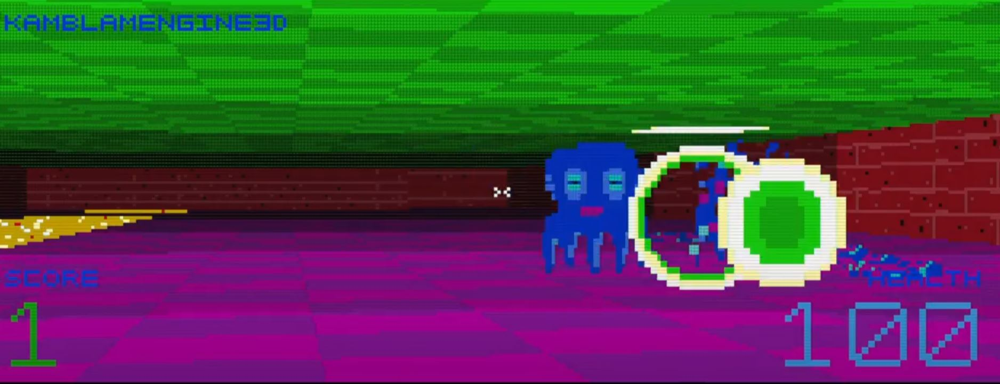

I created a graphics engine using the Windows API, focusing on memory management and software engineering principles to achieve graphics rendering in the console window using glyphs and colours as pixels. The engine implements the console screen buffer to draw graphics, utilising virtual 'game loop' methods, to manage rendering efficiently. The project provided hands-on experience with lower-level memory management and the application of design patterns such as factory, strategy, composite and state to create expandable and maintainable code.
Sprite design
I built a texture editor to create and edit textures to be used by the engine (this can be seen here). This developed into a fully functional editing application as it became apparent that I needed a way of drawing interesting art if I wanted to develop my concept game (and other projects) further.

Scene from Demo Game
I am currently building a raycasting FPS concept game to demonstrate functionality (this can be seen here). The video shows some of the game mechanics that are working at present. The textures were designed in the TexturePainter app, also built with the console graphics engine.
More pics to followMore pics to followMore pics to follow
More pics to followMore pics to followMore pics to follow
Helpful Resources and ContentOneLoneCoder - An extreamly useful resource for learning the Windows API and handling the console. After some flondering with the screen buffer it was very fortunate to find his tutorial series! His texture format was used in my design. I also based my game-loop implementation on his initial design. 3DSage - A very good set of tutorials for implementing raycasting. This was particularly helpful for rendering the floor and ceiling textures.